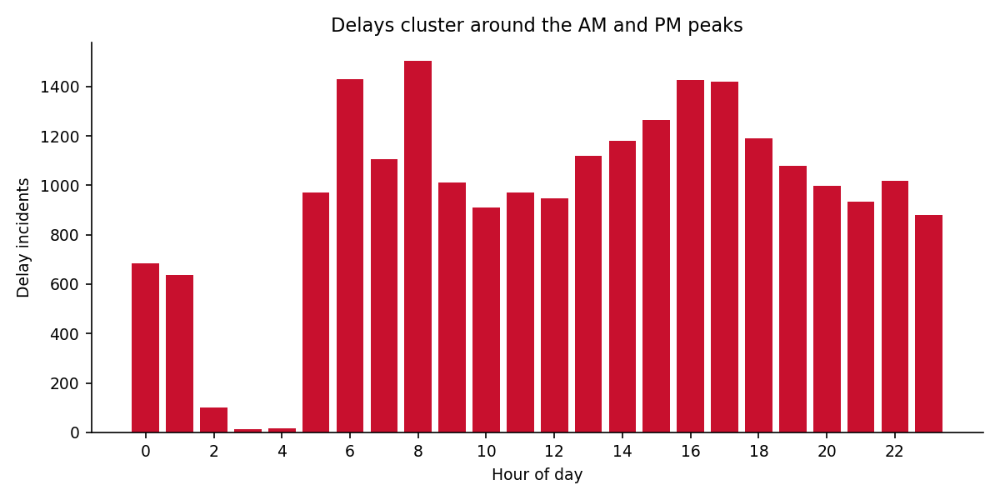
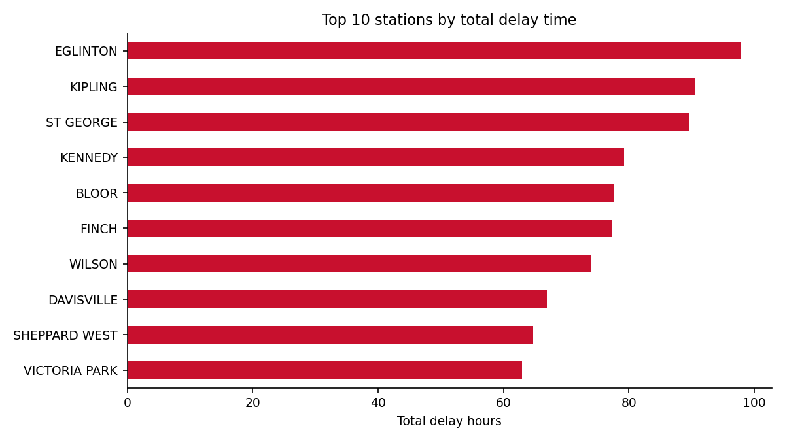

Toronto Open Data
TTC subway delay analysis
The TTC logs every subway delay. This project works out where service time is actually lost, and what would give riders the biggest reliability improvement per dollar.
Data: 64,485 delay records for 2024 and 2025 from the City of Toronto Open Data portal.
Python, pandas, NumPy, Matplotlib
- raw records
- 64,485
- delay incidents after cleaning
- 22,814
- of service time lost
- 126 days
- average delay, median 5
- 8.0 min
The question
Where is subway service time actually being lost, and what would give riders the biggest reliability improvement per dollar?
What I did
- Combined and cleaned two years of raw delay logs from Excel and CSV extracts, standardized station names, and joined the TTC's delay-code lookup table to translate codes into readable causes.
- Filtered to 22,814 true delay incidents across Lines 1, 2 and 4, and measured lost service time by line, station, hour, weekday and cause.
- Wrote one analysis script that regenerates every chart and a findings summary from the raw files.
What I found
- 126 days of service time lost: 181,700 delay minutes over the period, averaging 8.0 minutes per incident.
- Line 1 loses the most time (100,290 minutes across 13,078 incidents), but Line 2 delays run longer on average, 8.3 against 7.7 minutes.
- Delays peak at 8 AM and between 4 and 5 PM, exactly when capacity matters most.
- The top causes are people, not equipment: disorderly patrons, medical emergencies and unauthorized track-level access dominate, which supports investment in platform safety and station staffing over purely mechanical fixes.
- Eglinton, Kipling, St George and Kennedy are the highest-loss stations, all major interchange or terminal points.


Run it
pip install pandas numpy matplotlib openpyxl
python ttc_delay_analysis.py